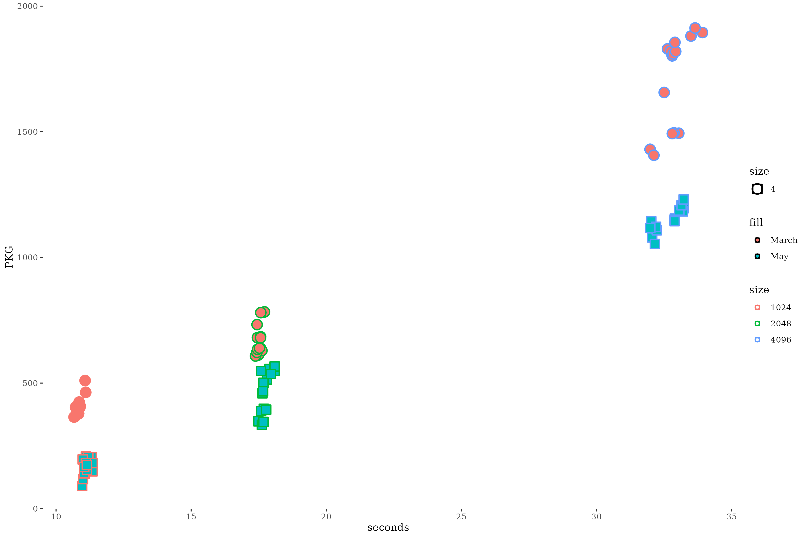
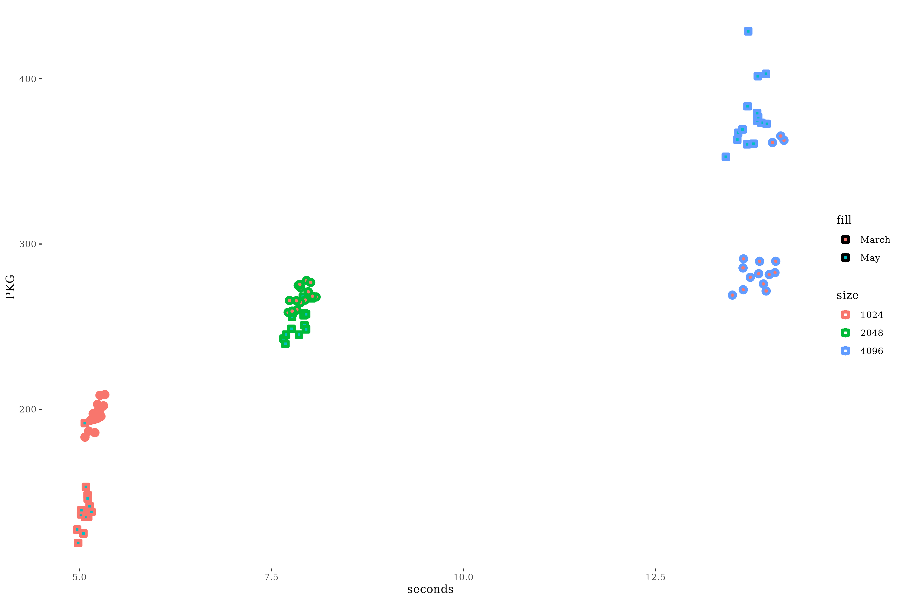
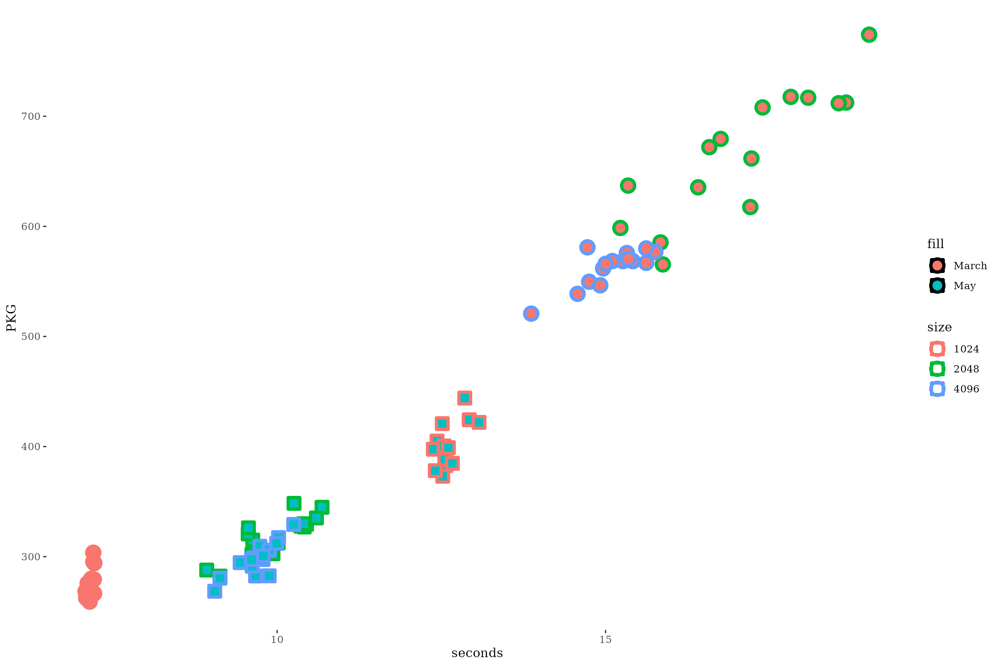
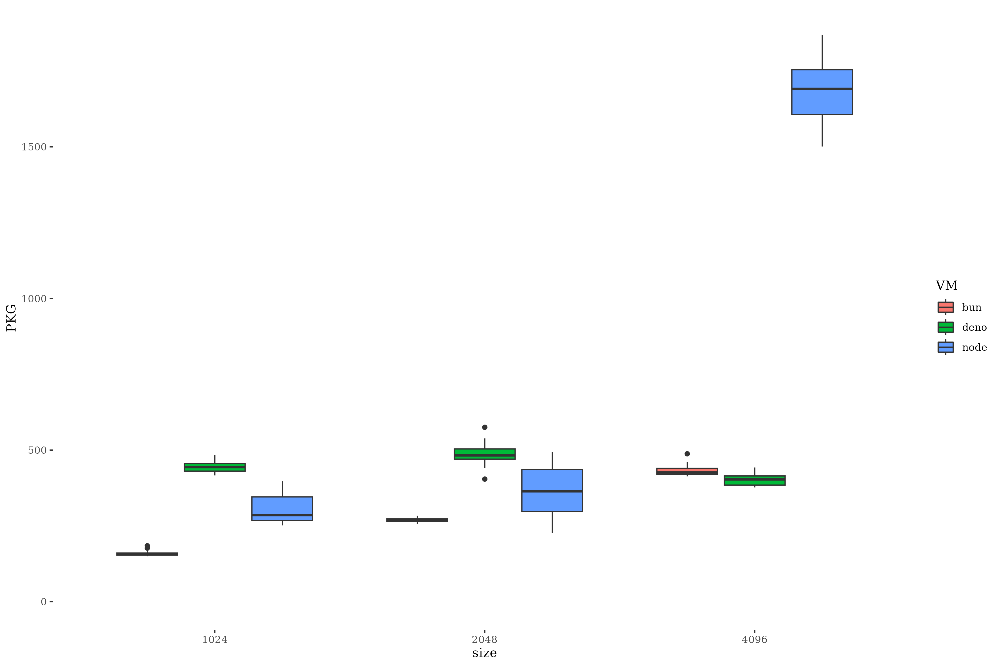
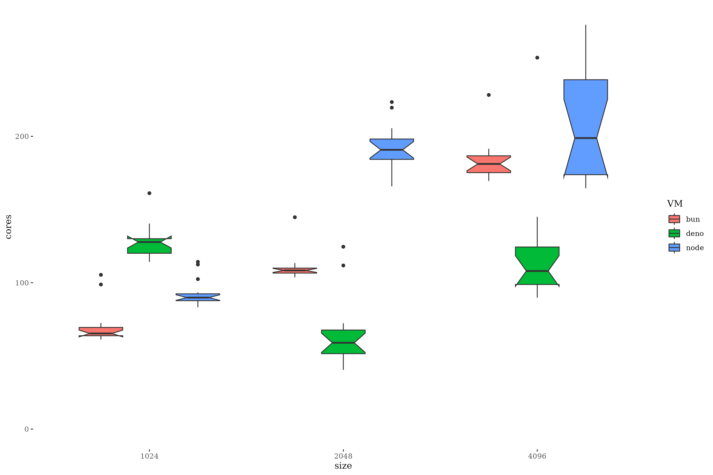
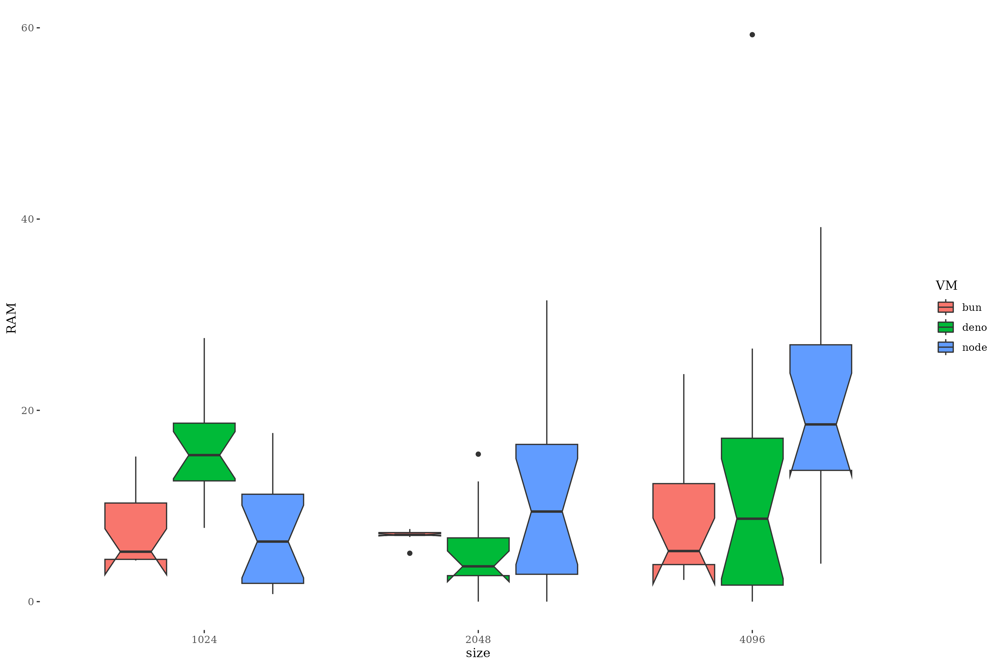

Energy consumption of evolutionary algorithms in JavaScript
Merelo (UGR-ES), García-Valdez (ITT-MX), Castillo
(UGR-ES)
Wivace, 2023, Venice
Green
computing
Minimize the amount of energy spent in
algorithms/applications
No fixed set of rules for "greening"
Algorithm/language specific experimental methodology
JavaScript
is here to stay
ECMA standard
And has different interpreters:
bun, deno,
node.js
Profiling
the energy: finding how much energy the system spends
Using RAPL: Intel-defined machine readable machine
registers
PKG == CORE + RAM
Using command-line tools that measure single
processes
Measure 15 times, take average, measure
energy consumption of sleep during that
time, substract from measure
Not ideal but roughly accurate
Fitness, mutation and crossover, most important
operations
Involves integer arithmetic +
list/string manipulation
So far:
Measurements March 2023, published July 2023
bun rocks
pinpoint, best tool for
command-line measures
What we'll be doing now
Is there any change with new runtime versions?
Is mutation also a significant operator?
What happens with different hardware architectures?
Is there any change with new runtime versions?
Definitely
How?
It's complicated
Version change: node.js uses less energy

Version change: bun uses less energy... to a point

Version change: deno improves energy and time only for big chromosome sizes

The
promissione ducale was renovated for every new doge
Measurements are only valid for a single minor version
Should mutation also be measured ?
Not really

Let's
drop mutation for future tests
What happens with different hardware
architectures?
Energy consumption will
depend on hardware implementation
What is measured also
changes: AMD emulates, Intel does not
Measuring core energy consumption

Measuring RAM energy consumption

Average time (s) and cost (Joules)
| VM |
Size |
AMD - s |
AMD - J |
Intel - s |
Intel - J |
| bun |
1024 |
5.074043 |
141.1920 |
7.951114 |
78.30800 |
| bun |
2048 |
7.839581 |
253.4840 |
12.520187 |
117.62600 |
| bun |
4096 |
13.743342 |
377.8240 |
24.408003 |
193.08267 |
| deno |
1024 |
12.607883 |
400.6260 |
19.325474 |
143.78200 |
| deno |
2048 |
9.969686 |
319.4293 |
19.350870 |
70.27667 |
| deno |
4096 |
9.699899 |
297.8767 |
20.078916 |
132.41000 |
| node |
1024 |
11.132792 |
167.4040 |
15.823338 |
100.29200 |
| node |
2048 |
17.748798 |
460.2467 |
32.422865 |
203.13200 |
| node |
4096 |
32.627382 |
1145.8933 |
29.285567 |
228.25267 |
There's usually a speed/energy efficiency
tradeoff
With speed losses overcome by bigger
energy savings, usually
Speed and energy savings
depending on factors such as size
Conclusions
Energy expenses are minimized
using bun and Intel laptops
But measures are needed for
every change in platform/interpreters
Any VM consumes less than node.js
Vi ringrazio per la vostra attenzione